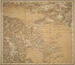

Balkan in kaart
Vijf eeuwen strijd om identiteit
Tentoonstelling van 4 september tot 16 oktober 2003 in de Universiteitsbibliotheek
Samenstelling: Harrie Teunissen en John Steegh
Tentoonstelling
kaarten 1 - 6, 7 - 9, 10
- 19, 20 - 29, 30
- 39, 40 - 47
Tenzij anders vermeld zijn de hier beschreven kaarten en gerelateerde stukken afkomstig uit de ‘Collectie Steegh & Teunissen’, te Leiden. Aan het eind van iedere uitgebreide objectbeschrijving is de naam van de auteur vermeld.
|  | ||
| 7. K. und K. Militär-Geographisches
Institut (Kokides/Kiepert): General-Karte des Königreiches
Griechenland. Wenen 1885. Schaal 1 : 300.000. 12 vellen: 184 x 155
cm. (U.1f.2) Na de Russisch-Turkse oorlog van 1877/'78 weet ook Griekenland te profiteren van de nederlaag van de Porte als de Ottomanen onder grote Franse en Britse druk heel Thessalië en het gebied rond Arta aan haar afstaan. Deze fraaie kaart van het koninkrijk geeft de omvang van het land weer kort na die uitbreiding van 1881. Sommige bladen vertonen Ottomaans-Turkse transcripties van plaatsnamen en er worden enkele frontlinies aangegeven op de route van Larissa naar Athene. Ook uit een datering op een bladrand blijkt dat de kaart gebruikt is in de oorlog van 1897 van het Ottomaanse Rijk tegen Griekenland. (meer)
|
||
| 8. Rumeli-yi şahane haritası. Saye-yi fuyuzat-i sermaye-yi cenab-i zillullahida erkan-i harbiye ... kesaf postalari tarafindan tashih ve erkan-i harbiye-yi 'umumuiye da'iresi besinci fen şu'besi ma'rifetyle tersim olunarak bu kerre da'ire-yi mezkure matba'asinda tab'-u temsil olunmişdir sene 1317 (Kaart van des sultans Roemelië, verbeterd door medewerkers van de afdeling onderzoek, gedrukt en afgebeeld in het te noemen bureau met medeweten van de vijfde kunstnijverheidsafdeling | ||
| der Generale Staf,
sectie Algemene Zaken, onder des sultans auspiciën). Z.p. (Istanboel?)
1317 (1901-'02). Schaal 1 : 210.000. Vier vellen 136 x 150 cm.
(U.2a.1)
Zie hier vier vellen van een grootschalige militair-topografische kaart van Europees Turkije, Roemelië voor de Ottomanen. Duidelijk is dat de infrastructuur nog rudimentair is: wegen komen er weinig op voor en spoorwegen vrijwel niet. Interessant is, dat de militairen de interne administratieve indeling van het gebied niet belangrijk genoeg vinden om te vermelden. Ter oriëntatie: het gebied in paarse band op het noordwestelijke vel is Montenegro, rechtsboven binnen gele grenzen ligt Servië en de grote stad aan de zuidrand van het noodoostelijke vel is Skopje. De twee grote meren aan de zuidrand van de kaart zijn die van Ohrid en Prespa, op de huidige grens van Albanië, Macedonië en Griekenland. De kust die zichtbaar is toont ongeveer de noordelijke helft van de huidige kust van Albanië. Dat betekent dat Macedonië en Kosovo er helemaal op staan, naast grote delen van Montenegro, Servië en Albanië en een noordrand van Griekenland. (meer)
|
||
| 9. Petar Madzarevic. Karta
javnih puteva sposobnih za saobracaj Kraljevine Jugoslavije (Kaart
van de openbare wegen geschikt voor verkeer in het koninkrijk
Joegoslavië). Z.p. z.j. (Belgrado? ca. 1935). Schaal 1: 600.000. 4 vellen 132 x 153 cm. (W.2h.4) Symbolisch voor de economische integratie van Joegoslavië in Europa is deze verkeerskaart van na de koninklijke staatsgreep van 1929. Het koninkrijk heet immers Joegoslavië |
||
| (niet langer 'van Serviërs,
Kroaten en Slovenen'), en het land is verdeeld in 9 'banovine' in
plaats van de 33 provincies van voor die tijd. De indeling is zo
gemaakt dat geen 'banovine' een moslimmeerderheid heeft. In deze
jaren is Joegoslavië het economisch meest ontwikkelde land van de
Balkan. Ofschoon ook overwegend agrarisch, is het meer op
internationale handel ingesteld dan andere Balkanstaten. (meer)
|
||
| vorige pagina | volgende pagina |